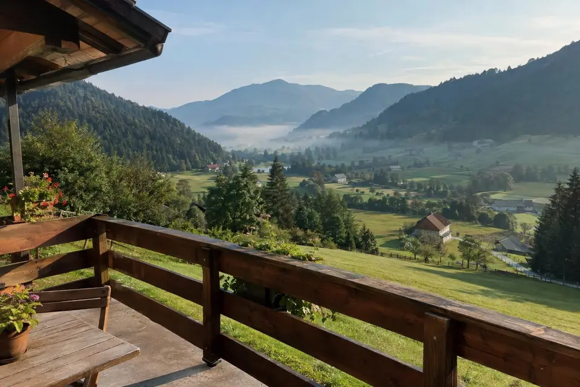
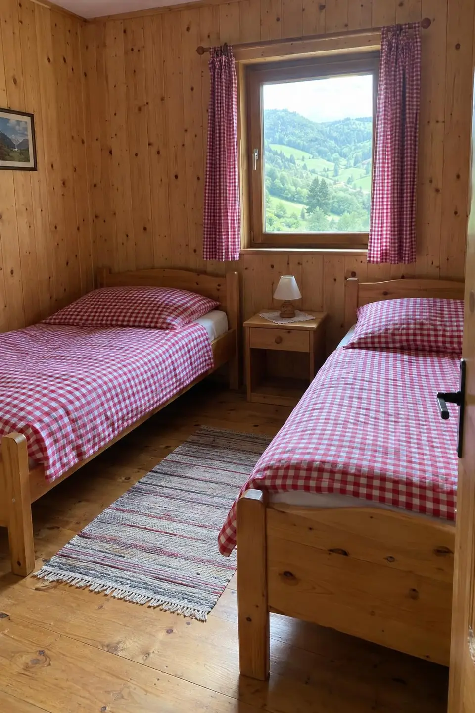
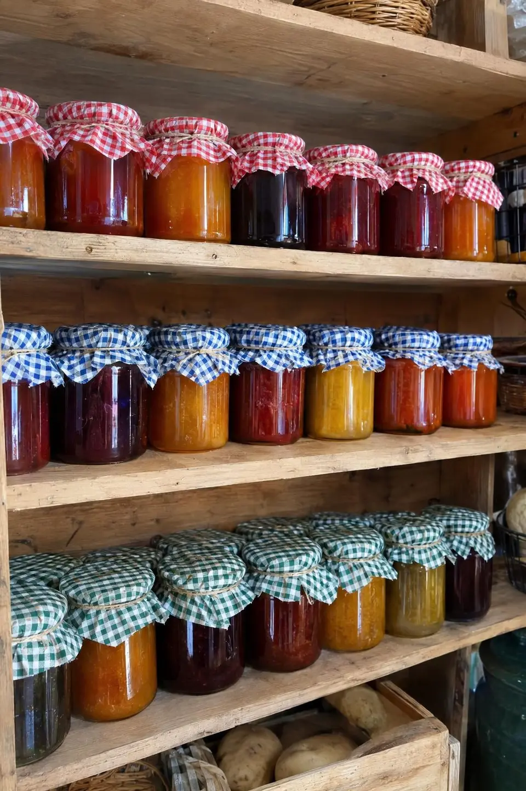

V Zgornji Savinjski dolini
Razgled na gore iz vsake sobe
4 sobe in apartma, zajtrk z naše kmetije, planinske poti se začnejo pri hiši.
- Raduha
- Logarska dolina
- Smučišče10 min

4 sobe in apartma za 4 osebe
Vse z lastno kopalnico in pogledom na gore.
- Nočitev z zajtrkom
- 38 €na osebo
- Polpenzion
- 52 €na osebo
Otroci do 6 let so brezplačni.
Kmetija, živali in domača hrana



Zajtrk
Mleko, sir, skuta, marmelade in kruh iz krušne peči, vse z naše kmetije
Otroci lahko pomagajo pri krmljenju koz in zajcev, kar jim je najbolj všeč.
Izletniška kmetija
Ob sobotah in nedeljah kuhamo kosila
- Sobota–nedelja
- 11.00–19.00
Juha, pečenka, štruklji, jabolčni zavitek. Za skupine kuhamo tudi med tednom po dogovoru.
Iz kmetije vodijo planinske poti
Kako do nasDo nas pripeljete po asfaltu, zadnjih 800 m je makadam.
Raduha
Logarska dolina
Smučišče
Pozimi, 10 min stran.
Na kmetiji sva od leta 1996
Mojca Grabnar
gostje in kuhinja
Tone Grabnar
živina in gozd
Rezervacije
Rezervacije sprejemamo po telefonu ali e-pošti.
- Naslov
- Podveža 41
3334 LučeNavodila za pot